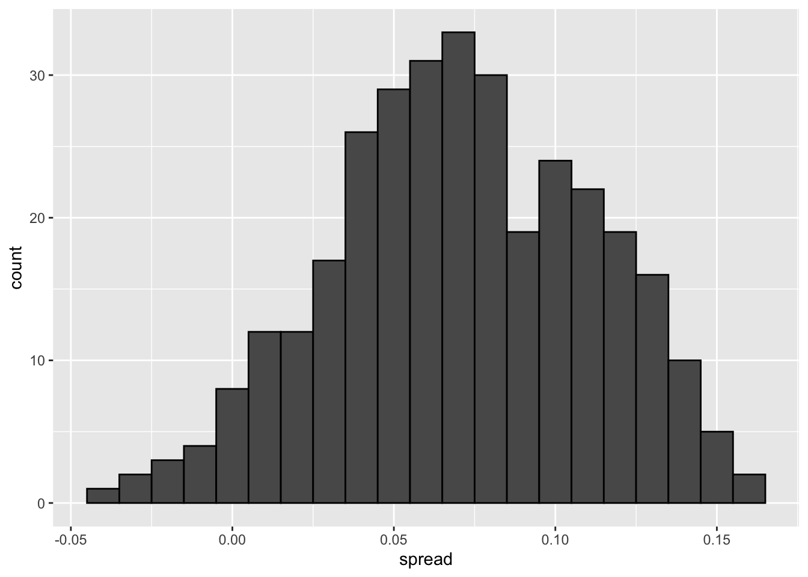
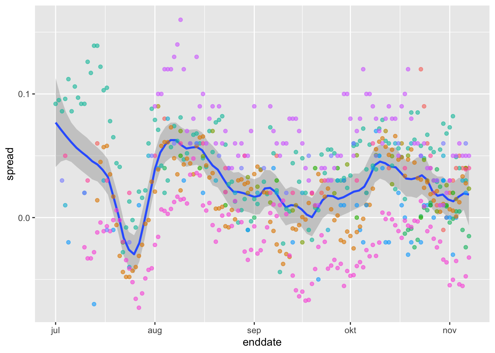
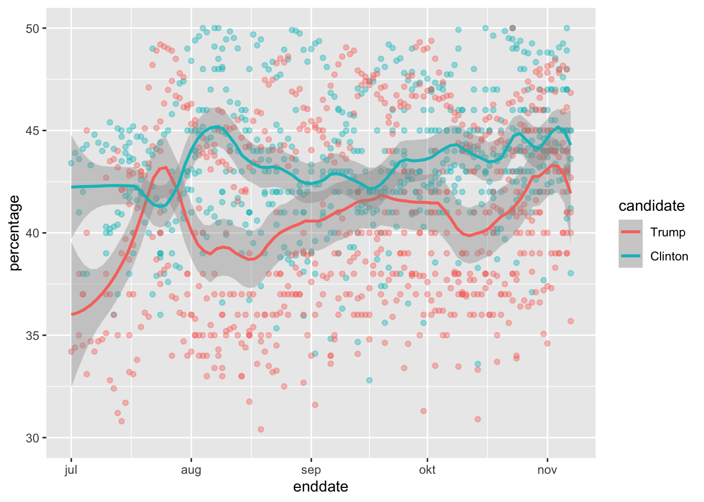
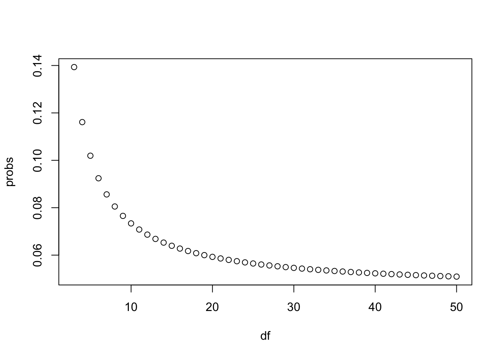

7 Section 6 Overview
In Section 6, you will learn about election forecasting, building on what you’ve learned in the previous sections about statistical modeling and Bayesian statistics.
After completing Section 6, you will be able to:
- Understand how pollsters use hierarchical models to forecast the results of elections.
- Incorporate multiple sources of variability into a mathematical model to make predictions.
- Construct confidence intervals that better model deviations such as those seen in election data using the t-distribution.
7.1 Election Forecasting
The textbook for this section is available here.
Key points
- In our model:
- The spread \(d \sim N(\mu, \tau)\) describes our best guess in the absence of polling data. We set \(\mu = 0\) and \(\tau = 0.035\) using historical data.
- The average of observed data \(\bar{X} \mid d \sim N(d, \sigma)\) describes randomness due to sampling and the pollster effect.
- Because the posterior distribution is normal, we can report a 95% credible interval that has a 95% chance of overlapping the parameter using \(\mbox{E}(p \mid Y)\) and \(\mbox{SE}(p \mid Y)\).
- Given an estimate of \(\mbox{E}(p \mid Y)\) and \(\mbox{SE}(p \mid Y)\), we can use
pnormto compute the probability that \(d>0\). - It is common to see a general bias that affects all pollsters in the same way. This bias cannot be predicted or measured before the election. We will include a term in later models to account for this variability.
Code: Definition of results object
This code defines the results object used for empirical Bayes election forecasting.
polls <- polls_us_election_2016 %>%
filter(state == "U.S." & enddate >= "2016-10-31" &
(grade %in% c("A+", "A", "A-", "B+") | is.na(grade))) %>%
mutate(spread = rawpoll_clinton/100 - rawpoll_trump/100)
one_poll_per_pollster <- polls %>% group_by(pollster) %>%
filter(enddate == max(enddate)) %>%
ungroup()
results <- one_poll_per_pollster %>%
summarize(avg = mean(spread), se = sd(spread)/sqrt(length(spread))) %>%
mutate(start = avg - 1.96*se, end = avg + 1.96*se)Code: Computing the posterior mean, standard error, credible interval and probability
Note that to compute an exact 95% credible interval, we would use qnorm(.975) instead of 1.96.
mu <- 0
tau <- 0.035
sigma <- results$se
Y <- results$avg
B <- sigma^2 / (sigma^2 + tau^2)
posterior_mean <- B*mu + (1-B)*Y
posterior_se <- sqrt(1 / (1/sigma^2 + 1/tau^2))
posterior_mean## [1] 0.02808534posterior_se## [1] 0.006149604# 95% credible interval
posterior_mean + c(-1.96, 1.96)*posterior_se## [1] 0.01603212 0.04013857# probability of d > 0
1 - pnorm(0, posterior_mean, posterior_se)## [1] 0.99999757.2 Mathematical Representations of Models
The textbook for this section is available here.
Key points
- If we collect several polls with measured spreads \(X_1, ..., X_j\) with a sample size of \(N\) , these random variables have expected value \(d\) and standard error \(2\sqrt{p(1-p)/N}\).
- We represent each measurement as \(X_{i,j} = d + b + h_i + \epsilon_{i,j}\) where:
- The index \(i\) represents the different pollsters
- The index \(j\) represents the different polls
- \(X_{i,j}\) is the \(j\)th poll by the \(i\)th pollster
- \(d\) is the actual spread of the election
- \(b\) is the general bias affecting all pollsters
- \(h_i\) represents the house effect for the \(i\)th pollster
- \(\epsilon_{i,j}\) represents the random error associated with the \(i,j\)th poll.
- The sample average is now \(\bar{X} = d + b + \frac{1}{N} \sum\limits_{i=1}^{N} X_i\) with standard deviation \(\mbox{SE}(\bar{X}) = \sqrt{\sigma^2/N + \sigma_b^2}\).
- The standard error of the general bias \(\sigma_b\) does not get reduced by averaging multiple polls, which increases the variability of our final estimate.
Code: Simulated data with \(X_j = d + \epsilon_j\)
J <- 6
N <- 2000
d <- .021
p <- (d+1)/2
X <- d + rnorm(J, 0, 2*sqrt(p*(1-p)/N))Code: Simulated data with \(X_j = d + \epsilon_{i,j}\)
I <- 5
J <- 6
N <- 2000
d <- .021
p <- (d+1)/2
X <- sapply(1:I, function(i){
d + rnorm(J, 0, 2*sqrt(p*(1-p)/N))
})Code: Simulated data with \(X_{i,j} = d + h_i + \epsilon_{i,j}\)
I <- 5
J <- 6
N <- 2000
d <- .021
p <- (d+1)/2
h <- rnorm(I, 0, 0.025) # assume standard error of pollster-to-pollster variability is 0.025
X <- sapply(1:I, function(i){
d + rnorm(J, 0, 2*sqrt(p*(1-p)/N))
})Code: Calculating probability of \(d > 0\) with general bias
Note that sigma now includes an estimate of the variability due to general bias \(\sigma_b = .025\).
mu <- 0
tau <- 0.035
sigma <- sqrt(results$se^2 + .025^2)
Y <- results$avg
B <- sigma^2 / (sigma^2 + tau^2)
posterior_mean <- B*mu + (1-B)*Y
posterior_se <- sqrt(1 / (1/sigma^2 + 1/tau^2))
1 - pnorm(0, posterior_mean, posterior_se)## [1] 0.81743737.3 Predicting the Electoral College
The textbook for this section is available here.
Key points
- In the US election, each state has a certain number of votes that are won all-or-nothing based on the popular vote result in that state (with minor exceptions not discussed here).
- We use the
left_join()function to combine the number of electoral votes with our poll results. - For each state, we apply a Bayesian approach to generate an Election Day \(d\) . We keep our prior simple by assuming an expected value of 0 and a standard deviation based on recent history of 0.02.
- We can run a Monte Carlo simulation that for each iteration simulates poll results in each state using that state’s average and standard deviation, awards electoral votes for each state to Clinton if the spread is greater than 0, then compares the number of electoral votes won to the number of votes required to win the election (over 269).
- If we run a Monte Carlo simulation for the electoral college without accounting for general bias, we overestimate Clinton’s chances of winning at over 99%.
- If we include a general bias term, the estimated probability of Clinton winning decreases significantly.
Code: Top 5 states ranked by electoral votes
The results_us_election_2016 object is defined in the dslabs package:
head(results_us_election_2016)## state electoral_votes clinton trump others
## 1 California 55 61.7 31.6 6.7
## 2 Texas 38 43.2 52.2 4.5
## 3 Florida 29 47.8 49.0 3.2
## 4 New York 29 59.0 36.5 4.5
## 5 Illinois 20 55.8 38.8 5.4
## 6 Pennsylvania 20 47.9 48.6 3.6results_us_election_2016 %>% arrange(desc(electoral_votes)) %>% top_n(5, electoral_votes)## state electoral_votes clinton trump others
## 1 California 55 61.7 31.6 6.7
## 2 Texas 38 43.2 52.2 4.5
## 3 Florida 29 47.8 49.0 3.2
## 4 New York 29 59.0 36.5 4.5
## 5 Illinois 20 55.8 38.8 5.4
## 6 Pennsylvania 20 47.9 48.6 3.6Code: Computing the average and standard deviation for each state
results <- polls_us_election_2016 %>%
filter(state != "U.S." &
!grepl("CD", "state") &
enddate >= "2016-10-31" &
(grade %in% c("A+", "A", "A-", "B+") | is.na(grade))) %>%
mutate(spread = rawpoll_clinton/100 - rawpoll_trump/100) %>%
group_by(state) %>%
summarize(avg = mean(spread), sd = sd(spread), n = n()) %>%
mutate(state = as.character(state))## `summarise()` ungrouping output (override with `.groups` argument)# 10 closest races = battleground states
results %>% arrange(abs(avg))## # A tibble: 47 x 4
## state avg sd n
## <chr> <dbl> <dbl> <int>
## 1 Florida 0.00356 0.0163 7
## 2 North Carolina -0.00730 0.0306 9
## 3 Ohio -0.0104 0.0252 6
## 4 Nevada 0.0169 0.0441 7
## 5 Iowa -0.0197 0.0437 3
## 6 Michigan 0.0209 0.0203 6
## 7 Arizona -0.0326 0.0270 9
## 8 Pennsylvania 0.0353 0.0116 9
## 9 New Mexico 0.0389 0.0226 6
## 10 Georgia -0.0448 0.0238 4
## # … with 37 more rows# joining electoral college votes and results
results <- left_join(results, results_us_election_2016, by="state")
# states with no polls: note Rhode Island and District of Columbia = Democrat
results_us_election_2016 %>% filter(!state %in% results$state)## state electoral_votes clinton trump others
## 1 Rhode Island 4 54.4 38.9 6.7
## 2 Alaska 3 36.6 51.3 12.2
## 3 Wyoming 3 21.9 68.2 10.0
## 4 District of Columbia 3 90.9 4.1 5.0# assigns sd to states with just one poll as median of other sd values
results <- results %>%
mutate(sd = ifelse(is.na(sd), median(results$sd, na.rm = TRUE), sd))Code: Calculating the posterior mean and posterior standard error
mu <- 0
tau <- 0.02
results %>% mutate(sigma = sd/sqrt(n),
B = sigma^2/ (sigma^2 + tau^2),
posterior_mean = B*mu + (1-B)*avg,
posterior_se = sqrt( 1 / (1/sigma^2 + 1/tau^2))) %>%
arrange(abs(posterior_mean))## # A tibble: 47 x 12
## state avg sd n electoral_votes clinton trump others sigma B posterior_mean posterior_se
## <chr> <dbl> <dbl> <int> <int> <dbl> <dbl> <dbl> <dbl> <dbl> <dbl> <dbl>
## 1 Florida 0.00356 0.0163 7 29 47.8 49 3.2 0.00618 0.0871 0.00325 0.00590
## 2 North Carolina -0.00730 0.0306 9 15 46.2 49.8 4 0.0102 0.207 -0.00579 0.00909
## 3 Iowa -0.0197 0.0437 3 6 41.7 51.1 7.1 0.0252 0.614 -0.00762 0.0157
## 4 Ohio -0.0104 0.0252 6 18 43.5 51.7 4.8 0.0103 0.210 -0.00823 0.00916
## 5 Nevada 0.0169 0.0441 7 6 47.9 45.5 6.6 0.0167 0.410 0.00995 0.0128
## 6 Michigan 0.0209 0.0203 6 16 47.3 47.5 5.2 0.00827 0.146 0.0179 0.00764
## 7 Arizona -0.0326 0.0270 9 11 45.1 48.7 6.2 0.00898 0.168 -0.0272 0.00820
## 8 New Mexico 0.0389 0.0226 6 5 48.3 40 11.7 0.00921 0.175 0.0321 0.00836
## 9 Georgia -0.0448 0.0238 4 16 45.9 51 3.1 0.0119 0.262 -0.0331 0.0102
## 10 Pennsylvania 0.0353 0.0116 9 20 47.9 48.6 3.6 0.00387 0.0361 0.0341 0.00380
## # … with 37 more rowsCode: Monte Carlo simulation of Election Night results (no general bias)
mu <- 0
tau <- 0.02
clinton_EV <- replicate(1000, {
results %>% mutate(sigma = sd/sqrt(n),
B = sigma^2/ (sigma^2 + tau^2),
posterior_mean = B*mu + (1-B)*avg,
posterior_se = sqrt( 1 / (1/sigma^2 + 1/tau^2)),
simulated_result = rnorm(length(posterior_mean), posterior_mean, posterior_se),
clinton = ifelse(simulated_result > 0, electoral_votes, 0)) %>% # award votes if Clinton wins state
summarize(clinton = sum(clinton)) %>% # total votes for Clinton
.$clinton + 7 # 7 votes for Rhode Island and DC
})
mean(clinton_EV > 269) # over 269 votes wins election## [1] 0.998# histogram of outcomes
data.frame(clinton_EV) %>%
ggplot(aes(clinton_EV)) +
geom_histogram(binwidth = 1) +
geom_vline(xintercept = 269)
Code: Monte Carlo simulation including general bias
mu <- 0
tau <- 0.02
bias_sd <- 0.03
clinton_EV_2 <- replicate(1000, {
results %>% mutate(sigma = sqrt(sd^2/(n) + bias_sd^2), # added bias_sd term
B = sigma^2/ (sigma^2 + tau^2),
posterior_mean = B*mu + (1-B)*avg,
posterior_se = sqrt( 1 / (1/sigma^2 + 1/tau^2)),
simulated_result = rnorm(length(posterior_mean), posterior_mean, posterior_se),
clinton = ifelse(simulated_result > 0, electoral_votes, 0)) %>% # award votes if Clinton wins state
summarize(clinton = sum(clinton)) %>% # total votes for Clinton
.$clinton + 7 # 7 votes for Rhode Island and DC
})
mean(clinton_EV_2 > 269) # over 269 votes wins election## [1] 0.8327.4 Forecasting
The textbook for this section is available here.
Key points
- In poll results, \(p\) is not fixed over time. Variability within a single pollster comes from time variation.
- In order to forecast, our model must include a bias term \(b_t\) to model the time effect.
- Pollsters also try to estimate \(f(t)\), the trend of \(p\) given time \(t\) using a model like:
\(Y_{i, j, t} = d + b + h_j + b_t + f(t) + \epsilon_{i, j, t}\)
- Once we decide on a model, we can use historical data and current data to estimate the necessary parameters to make predictions.
Code: Variability across one pollster
# select all national polls by one pollster
one_pollster <- polls_us_election_2016 %>%
filter(pollster == "Ipsos" & state == "U.S.") %>%
mutate(spread = rawpoll_clinton/100 - rawpoll_trump/100)
# the observed standard error is higher than theory predicts
se <- one_pollster %>%
summarize(empirical = sd(spread),
theoretical = 2*sqrt(mean(spread)*(1-mean(spread))/min(samplesize)))
se## empirical theoretical
## 1 0.04025194 0.03256719# the distribution of the data is not normal
one_pollster %>% ggplot(aes(spread)) +
geom_histogram(binwidth = 0.01, color = "black")
Code: Trend across time for several pollsters
polls_us_election_2016 %>%
filter(state == "U.S." & enddate >= "2016-07-01") %>%
group_by(pollster) %>%
filter(n() >= 10) %>%
ungroup() %>%
mutate(spread = rawpoll_clinton/100 - rawpoll_trump/100) %>%
ggplot(aes(enddate, spread)) +
geom_smooth(method = "loess", span = 0.1) +
geom_point(aes(color = pollster), show.legend = FALSE, alpha = 0.6)## `geom_smooth()` using formula 'y ~ x'
Code: Plotting raw percentages across time
polls_us_election_2016 %>%
filter(state == "U.S." & enddate >= "2016-07-01") %>%
select(enddate, pollster, rawpoll_clinton, rawpoll_trump) %>%
rename(Clinton = rawpoll_clinton, Trump = rawpoll_trump) %>%
gather(candidate, percentage, -enddate, -pollster) %>%
mutate(candidate = factor(candidate, levels = c("Trump", "Clinton"))) %>%
group_by(pollster) %>%
filter(n() >= 10) %>%
ungroup() %>%
ggplot(aes(enddate, percentage, color = candidate)) +
geom_point(show.legend = FALSE, alpha = 0.4) +
geom_smooth(method = "loess", span = 0.15) +
scale_y_continuous(limits = c(30, 50))## `geom_smooth()` using formula 'y ~ x'## Warning: Removed 22 rows containing non-finite values (stat_smooth).## Warning: Removed 22 rows containing missing values (geom_point).
7.5 Assessment - Election Forecasting
- For each poll in the polling data set, use the CLT to create a 95% confidence interval for the spread.
Create a new table called cis that contains columns for the lower and upper limits of the confidence intervals.
# Create a table called `polls` that filters by state, date, and reports the spread
polls <- polls_us_election_2016 %>%
filter(state != "U.S." & enddate >= "2016-10-31") %>%
mutate(spread = rawpoll_clinton/100 - rawpoll_trump/100)
# Create an object called `cis` that has the columns indicated in the instructions
cis <- polls %>% mutate(X_hat = (spread+1)/2, se = 2*sqrt(X_hat*(1-X_hat)/samplesize), lower = spread - qnorm(0.975)*se, upper = spread + qnorm(0.975)*se) %>% select(state, startdate, enddate, pollster, grade, spread, lower, upper)- You can add the final result to the
cistable you just created using theleft_joinfunction as shown in the sample code.
Now determine how often the 95% confidence interval includes the actual result.
# Add the actual results to the `cis` data set
add <- results_us_election_2016 %>% mutate(actual_spread = clinton/100 - trump/100) %>% select(state, actual_spread)
ci_data <- cis %>% mutate(state = as.character(state)) %>% left_join(add, by = "state")
# Create an object called `p_hits` that summarizes the proportion of confidence intervals that contain the actual value. Print this object to the console.
p_hits <- ci_data %>% mutate(hit = lower <= actual_spread & upper >= actual_spread) %>% summarize(proportion_hits = mean(hit))
p_hits## proportion_hits
## 1 0.66133- Now find the proportion of hits for each pollster.
Show only pollsters with at least 5 polls and order them from best to worst. Show the number of polls conducted by each pollster and the FiveThirtyEight grade of each pollster.
# The `cis` data have already been loaded for you
add <- results_us_election_2016 %>% mutate(actual_spread = clinton/100 - trump/100) %>% select(state, actual_spread)
ci_data <- cis %>% mutate(state = as.character(state)) %>% left_join(add, by = "state")
# Create an object called `p_hits` that summarizes the proportion of hits for each pollster that has at least 5 polls.
p_hits <- ci_data %>% mutate(hit = lower <= actual_spread & upper >= actual_spread) %>% group_by(pollster) %>% filter(n() >= 5) %>% summarize(proportion_hits = mean(hit), n = n(), grade = grade[1]) %>% arrange(desc(proportion_hits))## `summarise()` ungrouping output (override with `.groups` argument)p_hits## # A tibble: 13 x 4
## pollster proportion_hits n grade
## <fct> <dbl> <int> <fct>
## 1 Quinnipiac University 1 6 A-
## 2 Emerson College 0.909 11 B
## 3 Public Policy Polling 0.889 9 B+
## 4 University of New Hampshire 0.857 7 B+
## 5 Ipsos 0.807 119 A-
## 6 Mitchell Research & Communications 0.8 5 D
## 7 Gravis Marketing 0.783 23 B-
## 8 Trafalgar Group 0.778 9 C
## 9 Rasmussen Reports/Pulse Opinion Research 0.774 31 C+
## 10 Remington 0.667 9 <NA>
## 11 Google Consumer Surveys 0.588 102 B
## 12 SurveyMonkey 0.577 357 C-
## 13 YouGov 0.544 57 B- Repeat the previous exercise, but instead of pollster, stratify by state. Here we can’t show grades.
# The `cis` data have already been loaded for you
add <- results_us_election_2016 %>% mutate(actual_spread = clinton/100 - trump/100) %>% select(state, actual_spread)
ci_data <- cis %>% mutate(state = as.character(state)) %>% left_join(add, by = "state")
# Create an object called `p_hits` that summarizes the proportion of hits for each state that has more than 5 polls.
p_hits <- ci_data %>% mutate(hit = lower <= actual_spread & upper >= actual_spread) %>% group_by(state) %>% filter(n() >= 5) %>% summarize(proportion_hits = mean(hit), n = n()) %>% arrange(desc(proportion_hits))## `summarise()` ungrouping output (override with `.groups` argument)p_hits## # A tibble: 51 x 3
## state proportion_hits n
## <chr> <dbl> <int>
## 1 Connecticut 1 13
## 2 Delaware 1 12
## 3 Rhode Island 1 10
## 4 New Mexico 0.941 17
## 5 Washington 0.933 15
## 6 Oregon 0.929 14
## 7 Illinois 0.923 13
## 8 Nevada 0.923 26
## 9 Maine 0.917 12
## 10 Montana 0.917 12
## # … with 41 more rows- Make a barplot based on the result from the previous exercise.
# The `p_hits` data have already been loaded for you. Use the `head` function to examine it.
head(p_hits)## # A tibble: 6 x 3
## state proportion_hits n
## <chr> <dbl> <int>
## 1 Connecticut 1 13
## 2 Delaware 1 12
## 3 Rhode Island 1 10
## 4 New Mexico 0.941 17
## 5 Washington 0.933 15
## 6 Oregon 0.929 14# Make a barplot of the proportion of hits for each state
p_hits %>% mutate(state = reorder(state, proportion_hits)) %>%
ggplot(aes(state, proportion_hits)) +
geom_bar(stat = "identity") +
coord_flip()
- Even if a forecaster’s confidence interval is incorrect, the overall predictions will do better if they correctly called the right winner.
Add two columns to the cis table by computing, for each poll, the difference between the predicted spread and the actual spread, and define a column hit that is true if the signs are the same.
# The `cis` data have already been loaded. Examine it using the `head` function.
head(cis)## state startdate enddate pollster grade spread lower upper
## 1 New Mexico 2016-11-06 2016-11-06 Zia Poll <NA> 0.02 -0.001331221 0.0413312213
## 2 Virginia 2016-11-03 2016-11-04 Public Policy Polling B+ 0.05 -0.005634504 0.1056345040
## 3 Iowa 2016-11-01 2016-11-04 Selzer & Company A+ -0.07 -0.139125210 -0.0008747905
## 4 Wisconsin 2016-10-26 2016-10-31 Marquette University A 0.06 0.004774064 0.1152259363
## 5 North Carolina 2016-11-04 2016-11-06 Siena College A 0.00 -0.069295191 0.0692951912
## 6 Georgia 2016-11-06 2016-11-06 Landmark Communications B -0.03 -0.086553820 0.0265538203# Create an object called `errors` that calculates the difference between the predicted and actual spread and indicates if the correct winner was predicted
errors <- cis %>% mutate(error = spread - ci_data$actual_spread, hit = sign(spread) == sign(ci_data$actual_spread))
# Examine the last 6 rows of `errors`
tail(errors)## state startdate enddate pollster grade spread lower upper error hit
## 807 Utah 2016-10-04 2016-11-06 YouGov B -0.0910 -0.1660704570 -0.01592954 0.0890 TRUE
## 808 Utah 2016-10-25 2016-10-31 Google Consumer Surveys B -0.0121 -0.1373083389 0.11310834 0.1679 TRUE
## 809 South Dakota 2016-10-28 2016-11-02 Ipsos A- -0.1875 -0.3351563485 -0.03984365 0.1105 TRUE
## 810 Washington 2016-10-21 2016-11-02 Ipsos A- 0.0838 -0.0004028265 0.16800283 -0.0782 TRUE
## 811 Utah 2016-11-01 2016-11-07 Google Consumer Surveys B -0.1372 -0.2519991224 -0.02240088 0.0428 TRUE
## 812 Oregon 2016-10-21 2016-11-02 Ipsos A- 0.0905 -0.0019261469 0.18292615 -0.0195 TRUE- Create an object called
p_hitsthat contains the proportion of instances when the sign of the actual spread matches the predicted spread for states with 5 or more polls.
Make a barplot based on the result from the previous exercise that shows the proportion of times the sign of the spread matched the actual result for the data in p_hits.
# Create an object called `errors` that calculates the difference between the predicted and actual spread and indicates if the correct winner was predicted
errors <- cis %>% mutate(error = spread - ci_data$actual_spread, hit = sign(spread) == sign(ci_data$actual_spread))
# Create an object called `p_hits` that summarizes the proportion of hits for each state that has 5 or more polls
p_hits <- errors %>% group_by(state) %>% filter(n() >= 5) %>% summarize(proportion_hits = mean(hit), n = n())## `summarise()` ungrouping output (override with `.groups` argument)# Make a barplot of the proportion of hits for each state
p_hits %>% mutate(state = reorder(state, proportion_hits)) %>%
ggplot(aes(state, proportion_hits)) +
geom_bar(stat = "identity") +
coord_flip()
- In the previous graph, we see that most states’ polls predicted the correct winner 100% of the time.
Only a few states polls’ were incorrect more than 25% of the time. Wisconsin got every single poll wrong. In Pennsylvania and Michigan, more than 90% of the polls had the signs wrong.
Make a histogram of the errors. What is the median of these errors?
# The `errors` data have already been loaded. Examine them using the `head` function.
head(errors)## state startdate enddate pollster grade spread lower upper error hit
## 1 New Mexico 2016-11-06 2016-11-06 Zia Poll <NA> 0.02 -0.001331221 0.0413312213 -0.063 TRUE
## 2 Virginia 2016-11-03 2016-11-04 Public Policy Polling B+ 0.05 -0.005634504 0.1056345040 -0.004 TRUE
## 3 Iowa 2016-11-01 2016-11-04 Selzer & Company A+ -0.07 -0.139125210 -0.0008747905 0.024 TRUE
## 4 Wisconsin 2016-10-26 2016-10-31 Marquette University A 0.06 0.004774064 0.1152259363 0.067 FALSE
## 5 North Carolina 2016-11-04 2016-11-06 Siena College A 0.00 -0.069295191 0.0692951912 0.036 FALSE
## 6 Georgia 2016-11-06 2016-11-06 Landmark Communications B -0.03 -0.086553820 0.0265538203 0.021 TRUE# Generate a histogram of the error
hist(errors$error)
# Calculate the median of the errors. Print this value to the console.
median(errors$error)## [1] 0.037- We see that, at the state level, the median error was slightly in favor of Clinton. The distribution is not centered at 0, but at 0.037. This value represents the general bias we described in an earlier section.
Create a boxplot to examine if the bias was general to all states or if it affected some states differently. Filter the data to include only pollsters with grades B+ or higher.
# The `errors` data have already been loaded. Examine them using the `head` function.
head(errors)## state startdate enddate pollster grade spread lower upper error hit
## 1 New Mexico 2016-11-06 2016-11-06 Zia Poll <NA> 0.02 -0.001331221 0.0413312213 -0.063 TRUE
## 2 Virginia 2016-11-03 2016-11-04 Public Policy Polling B+ 0.05 -0.005634504 0.1056345040 -0.004 TRUE
## 3 Iowa 2016-11-01 2016-11-04 Selzer & Company A+ -0.07 -0.139125210 -0.0008747905 0.024 TRUE
## 4 Wisconsin 2016-10-26 2016-10-31 Marquette University A 0.06 0.004774064 0.1152259363 0.067 FALSE
## 5 North Carolina 2016-11-04 2016-11-06 Siena College A 0.00 -0.069295191 0.0692951912 0.036 FALSE
## 6 Georgia 2016-11-06 2016-11-06 Landmark Communications B -0.03 -0.086553820 0.0265538203 0.021 TRUE# Create a boxplot showing the errors by state for polls with grades B+ or higher
errors %>% filter(grade %in% c("A+","A","A-","B+") | is.na(grade)) %>% mutate(state = reorder(state, error)) %>% ggplot(aes(state, error)) + geom_boxplot() + geom_point()
- Some of these states only have a few polls.
Repeat the previous exercise to plot the errors for each state, but only include states with five good polls or more.
# The `errors` data have already been loaded. Examine them using the `head` function.
head(errors)## state startdate enddate pollster grade spread lower upper error hit
## 1 New Mexico 2016-11-06 2016-11-06 Zia Poll <NA> 0.02 -0.001331221 0.0413312213 -0.063 TRUE
## 2 Virginia 2016-11-03 2016-11-04 Public Policy Polling B+ 0.05 -0.005634504 0.1056345040 -0.004 TRUE
## 3 Iowa 2016-11-01 2016-11-04 Selzer & Company A+ -0.07 -0.139125210 -0.0008747905 0.024 TRUE
## 4 Wisconsin 2016-10-26 2016-10-31 Marquette University A 0.06 0.004774064 0.1152259363 0.067 FALSE
## 5 North Carolina 2016-11-04 2016-11-06 Siena College A 0.00 -0.069295191 0.0692951912 0.036 FALSE
## 6 Georgia 2016-11-06 2016-11-06 Landmark Communications B -0.03 -0.086553820 0.0265538203 0.021 TRUE# Create a boxplot showing the errors by state for states with at least 5 polls with grades B+ or higher
errors %>% filter(grade %in% c("A+","A","A-","B+") | is.na(grade)) %>% group_by(state) %>% filter(n() >= 5) %>% ungroup() %>%mutate(state = reorder(state, error)) %>% ggplot(aes(state, error)) + geom_boxplot() + geom_point()
7.6 The t-Distribution
The textbook for this section is available here.
Key points
- In models where we must estimate two parameters, \(p\) and \(\sigma\), the Central Limit Theorem can result in overconfident confidence intervals for sample sizes smaller than approximately 30.
- If the population data are known to follow a normal distribution, theory tells us how much larger to make confidence intervals to account for estimation of \(\sigma\).
- Given \(s\) as an estimate of \(\sigma\), then \(Z = \frac{\bar{X} - d}{s/\sqrt{N}}\) follows a t-distribution with \(N - 1\) degrees of freedom.
- Degrees of freedom determine the weight of the tails of the distribution. Small values of degrees of freedom lead to increased probabilities of extreme values.
- We can determine confidence intervals using the t-distribution instead of the normal distribution by calculating the desired quantile with the function
qt().
Code: Calculating 95% confidence intervals with the t-distribution
z <- qt(0.975, nrow(one_poll_per_pollster) - 1)
one_poll_per_pollster %>%
summarize(avg = mean(spread), moe = z*sd(spread)/sqrt(length(spread))) %>%
mutate(start = avg - moe, end = avg + moe)## # A tibble: 1 x 4
## avg moe start end
## <dbl> <dbl> <dbl> <dbl>
## 1 0.0290 0.0134 0.0156 0.0424# quantile from t-distribution versus normal distribution
qt(0.975, 14) # 14 = nrow(one_poll_per_pollster) - 1## [1] 2.144787qnorm(0.975)## [1] 1.9599647.7 Assessment - The t-Distribution
- We know that, with a normal distribution, only 5% of values are more than 2 standard deviations away from the mean.
Calculate the probability of seeing t-distributed random variables being more than 2 in absolute value when the degrees of freedom are 3.
# Calculate the probability of seeing t-distributed random variables being more than 2 in absolute value when 'df = 3'.
1 - pt(2, df = 3) + pt(-2, df = 3)## [1] 0.139326- Now use
sapplyto compute the same probability for degrees of freedom from 3 to 50.
Make a plot and notice when this probability converges to the normal distribution’s 5%.
# Generate a vector 'df' that contains a sequence of numbers from 3 to 50
df <- c(3:50)
# Make a function called 'pt_func' that calculates the probability that a value is more than |2| for any degrees of freedom
pt_function <- function(f) {
1 - pt(2, f) + pt(-2, f)
}
# Generate a vector 'probs' that uses the `pt_func` function to calculate the probabilities
probs <- sapply(df, pt_function)
# Plot 'df' on the x-axis and 'probs' on the y-axis
plot(df, probs)
- In a previous section, we repeatedly took random samples of 50 heights from a distribution of heights.
We noticed that about 95% of the samples had confidence intervals spanning the true population mean.
Re-do this Monte Carlo simulation, but now instead of \(N = 50\), use \(N = 15\). Notice what happens to the proportion of hits.
# Use the sample code to generate 'x', a vector of male heights
x <- heights %>% filter(sex == "Male") %>%
.$height
# Create variables for the mean height 'mu', the sample size 'N', and the number of times the simulation should run 'B'
mu <- mean(x)
N <- 15
B <- 10000
# Use the `set.seed` function to make sure your answer matches the expected result after random sampling
set.seed(1)
# Generate a logical vector 'res' that contains the results of the simulations
res <- replicate(B, {
X <- sample(x, N, replace = TRUE)
interval <- mean(X) + c(-1,1)*qnorm(0.975)*sd(X)/sqrt(N)
between(mu, interval[1], interval[2])
}
)
# Calculate the proportion of times the simulation produced values within the 95% confidence interval. Print this value to the console.
p_hit <- mean(res)
p_hit## [1] 0.9331- \(N = 15\) is not that big. We know that heights are normally distributed, so the t-distribution should apply.
Repeat the previous Monte Carlo simulation using the t-distribution instead of using the normal distribution to construct the confidence intervals.
What are the proportion of 95% confidence intervals that span the actual mean height now?
# The vector of filtered heights 'x' has already been loaded for you. Calculate the mean.
mu <- mean(x)
# Use the same sampling parameters as in the previous exercise.
set.seed(1)
N <- 15
B <- 10000
# Generate a logical vector 'res' that contains the results of the simulations using the t-distribution
res <- replicate(B, {
X <- sample(x, N, replace = TRUE)
interval <- mean(X) + c(-1,1)*qt(0.975, N - 1) * sd(X) / sqrt(N)
between(mu, interval[1], interval[2])
}
)
# Calculate the proportion of times the simulation produced values within the 95% confidence interval. Print this value to the console.
p_hit <- mean(res)
p_hit## [1] 0.9512- Why did the t-distribution confidence intervals work so much better?
- A. The t-distribution takes the variability into account and generates larger confidence intervals.
- B. Because the t-distribution shifts the intervals in the direction towards the actual mean.
- C. This was just a chance occurrence. If we run it again, the CLT will work better.
- D. The t-distribution is always a better approximation than the normal distribution.